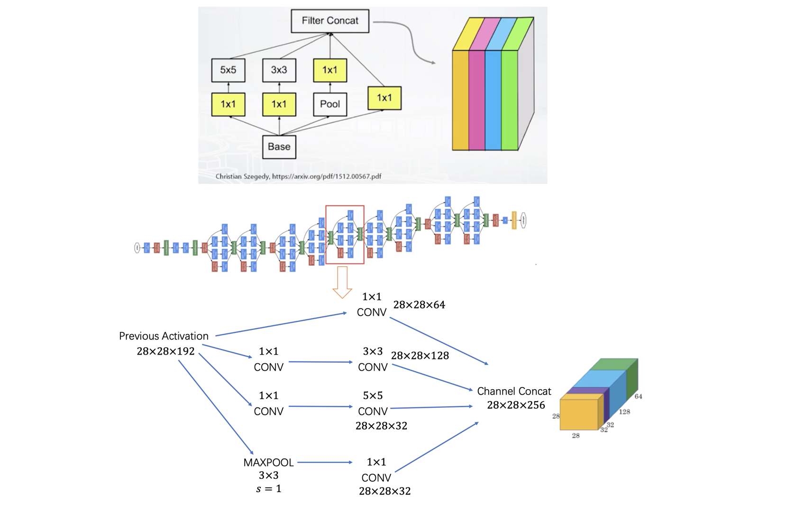

CNN
经典结构
LeNet5
LeNet5（1998），第一个卷积神经网络。

| 层 |
维度 |
大小 |
参数量 |
| Input |
(32, 32, 3) |
3072 |
0 |
| CONV1 (f=5, s=1) |
(28, 28, 8) |
6272 |
(553 + 1) * 8 = 608 |
| POOL1 |
(14, 14, 8) |
1568 |
0 |
| CONV2 (f=5, s=1) |
(10, 10, 16) |
1600 |
(558 + 1) * 16 = 3216 |
| POOL2 |
(5, 5, 16) |
400 |
0 |
| FC3 |
(120, 1) |
120 |
400*120 + 120 = 48120 |
| FC4 |
(84, 1) |
84 |
120*84 + 84 (not 1) = 10164 |
| Softmax |
(10, 1) |
10 |
84*10 + 10 = 850 |
AlexNet
AlexNet（2012）第一个深度卷积神经网络。Top5 误差从 26% 降到 15%。11\times11, 5\times5, 3\times3 卷积核，max-pooling，dropout，data augmentation，ReLU activation，SGD with momentum，60 million 参数量。
VGG
VGG（2015）类似于 AlexNet，仅仅 3\times3 卷积核，但是多层。ImageNet Top5 误差 8%。

InceptionV3
InceptionV3（2015）采用 GoogleNet 提出的 Inception block。ImageNet Top5 误差 5.6%。atch normalization, image distortion, RMSprop。

1 \times 1 卷积核捕获输出通道的交互，减少了输入通道的数目但不损害模型质量，因为不同通道想依赖。
\begin{bmatrix}
1 & 2 & 3 & 6 & 5 & 8 \\
3 & 5 & 5 & 1 & 3 & 4 \\
2 & 1 & 3 & 4 & 9 & 3 \\
4 & 7 & 8 & 5 & 7 & 9 \\
1 & 5 & 3 & 7 & 4 & 8 \\
5 & 4 & 9 & 8 & 3 & 5
\end{bmatrix} *
\begin{bmatrix} 2 \end{bmatrix} =
\begin{bmatrix}
2 & 4 & 6 & 12 & 10 & 16 \\
6 & 10 & 10 & 2 & 6 & 8 \\
4 & 2 & 6 & 8 & 18 & 6 \\
8 & 14 & 16 & 10 & 14 & 18 \\
2 & 10 & 6 & 14 & 8 & 16 \\
10 & 8 & 18 & 16 & 6 & 10
\end{bmatrix}

Basic Inception Block

ResNet
ResNet（2015）引入了残差连接（residual connections 或者 skip connections）。ImageNet Top5 误差 4.5%。152 层, 较少的 7\times7 卷积层，大部份是 3\times3，batch normalization，max and average pooling。
残差连接指的是输出通道直接连接输入通道 x。
简单分类任务
手写数字识别
这里使用 MNIST 数据集。
1
2
3
4
5
6
7
8
9
10
11
12
13
14
15
16
17
18
19
20
21
22
23
24
25
26
27
28
29
30
31
32
33
34
35
36
37
38
39
40
41
42
43
44
45
46
47
48
49
50
51
52
53
54
55
56
57
58
59
60
61
62
63
64
65
66
67
68
69
70
71 | from matplotlib import pyplot as plt
%matplotlib inline
import tensorflow as tf
print("We're using TF", tf.__version__)
# building a model with keras
from tensorflow.keras.layers import Dense, Activation
from tensorflow.keras.models import Sequential
from tensorflow.keras.utils import to_categorical
from tensorflow.keras.datasets import mnist
# Load data and preprocess
(X_train, y_train), (X_test, y_test) = mnist.load_data()
X_train = X_train.reshape((60000, 28*28))/255.
X_test = X_test.reshape((10000, 28*28))/255.
y_train_oh = to_categorical(y_train, 10)
y_test_oh = to_categorical(y_test, 10)
# we still need to clear a graph though
tf.keras.backend.clear_session()
# it is a feed-forward network without loops like in RNN
model = Sequential()
# the first layer must specify the input shape (replacing placeholders)
model.add(Dense(256, input_shape=(784,)))
model.add(Activation('sigmoid'))
model.add(Dense(256))
model.add(Activation('sigmoid'))
model.add(Dense(10))
model.add(Activation('softmax'))
# you can look at all layers and parameter count
model.summary()
# now we "compile" the model specifying the loss and optimizer
model.compile(
loss='categorical_crossentropy', # this is our cross-entropy
optimizer='adam',
metrics=['accuracy'] # report accuracy during training
)
# and now we can fit the model with model.fit()
# and we don't have to write loops and batching manually as in TensorFlow
history = model.fit(
X_train,
y_train_oh,
batch_size=512,
epochs=40,
validation_data=(X_test, y_test_oh),
verbose=0
)
def plot(loss_train, loss_test, accuracy_train, accuracy_test, EPOCHS):
x = np.arange(EPOCHS)
fig, (ax1, ax2) = plt.subplots(1, 2, figsize=(20, 5))
ax1.plot(x, loss_train, color='red', linewidth=1.0, linestyle='solid',
label='train loss')
ax1.plot(x, loss_test, color='green', linewidth=1.0, linestyle='solid',
label='test loss')
ax1.legend()
ax1.set_title('Cross entropy loss')
ax2.plot(x, accuracy_train, color='red', linewidth=1.0, linestyle='solid',
label='accuracy train')
ax2.plot(x, accuracy_test, color='green', linewidth=1.0, linestyle='solid',
label='accuracy test')
ax2.legend()
ax2.set_title('Accuracy')
plt.show()
plot(history.history['loss'], history.history['val_loss'],
history.history['accuracy'], history.history['val_accuracy'],
len(history.epoch))
|
语义分割
目标检测
自编码器
自编码器（Autoencoders）主要想法是从原始高纬分布中选取数据，映射到一个新空间中，新空间的数据尽可能准确地反映原空间的数据分布，即Decoder(Encoder(x)) ~ x。
以矩阵分解为例，最小化矩阵变化前后的 diff
\left \| X - UV^{T} \right \| \rightarrow \min_{U, V}
GAN
GAN 对抗生成网络（Generative Adversarial Networks）。
对生成器（Generator）而言
L_{G} = -\log(1 - \text{Disc}(\text{Gen}(\text{Seed})))
对判别器（Discriminator）而言
L_{D} = -\log(1 - \text{Disc}(\text{RealData})) - \log(\text{Disc}(\text{Gen}(\text{Seed})))
训练过程：
1）随机初始化生成器和判别器的参数
2）训练判别器来区分真实图片和生成器输出的图片
3）训练生成器输出图片使判别器出错
4）重复步骤 2）和 3）